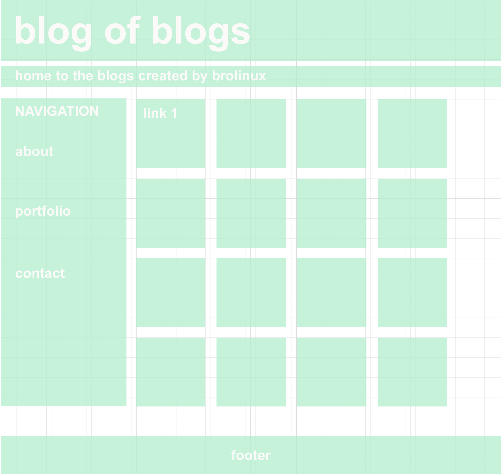

Decided to make the wirframe very easy to navigate. It opens on the links to works page which is the primary reason anyone is visiting the page in the first place.
There is a huge header a sidebar with convenient large links to the right of the navigation bar with a footer at the end.
In time I think I might add images instead of solid color squares, but I would have to take upload speed into consideration.
Here is the initial wirefram I made in Photoshop. This is a digital rendering of a hand sketch which I made on a page with width/height calculations to the side. It was pretty messy and a made a bunch, so I put the final recering in digital format.
